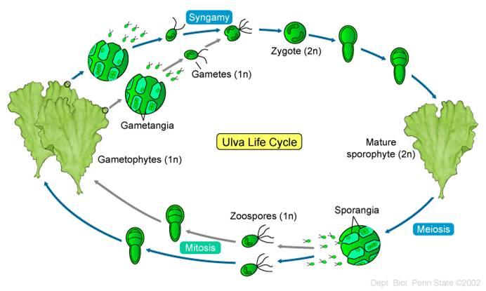

Les algues vertes sont apparues il y a plus d’un milliard d’années. Au début de leur évolution, une scission a donné naissance à deux groupes, dont l’un a donné naissance aux plantes terrestres, il y a environ 400 millions d’années ; l’autre a donné naissance à une grande diversité d’algues vertes d’eau douce et d’eau de mer, y compris les algues vertes (algues marines macroscopiques) qui jouent un rôle important dans les écosystèmes marins.
sporogyra sp (algue verte filamenteuse d’eau douce), Ulva sp(la laitue de mer, algue verte commestibles).

CYCLE DE REPRODUCTION DES ULVES
source: blogspot.com